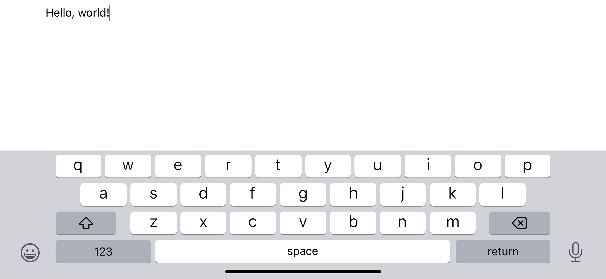

<meta charset="UTF-8">
<meta name="viewport" content="width=device-width, initial-scale=1">
<link rel="stylesheet" href="base.css">
<title>Scroll</title>
<main>
  <h1>Scroll</h1>
  
  <p>Notes.app takes too long to open. So does everything else. Can't keep up with the mind</p>
  <p>This iOS application presents a simple text field filling all available space and syncing to iCloud Drive with every change making it ideal for quickly capturing thoughts</p>
  <p>Scroll is feature-complete at <25 lines of Swift, but I would like to see it pass <a href="https://www.hogbaysoftware.com/posts/moby-dick-workout/">The Moby Dick Workout</a> eventually</p>
  <p>The necessary code is provided below – I hope this tiny application is as useful for you as it has been for me</p>
  <textarea cols="80" rows="20">
import SwiftUI

@main
struct ScrollApp: App {
    @Environment(\.scenePhase) var scenePhase
    @State var text: String = ""
    let file = FileManager.default.url(forUbiquityContainerIdentifier: "iCloud.art.flipstew.Scroll")!.appendingPathComponent("Documents").appendingPathComponent("Scroll.txt")
    func read() -> String {
        try? FileManager.default.startDownloadingUbiquitousItem(at: file)
        do { return try String(contentsOf: file, encoding: .utf8) } catch { return "" }
    }
    func write(_ text: String) {
        try? text.write(to: file, atomically: true, encoding: .utf8)
    }
    var body: some Scene {
        WindowGroup {
            ScrollView{
                TextEditor(text: $text)
                    .onChange(of: text) { write($0) }
                    .onChange(of: scenePhase) { if $0 == .active { text = read() } }
            }
        }
    }
}

  </textarea>
  <footer><a href="/">← Home</a></footer>
</main>
